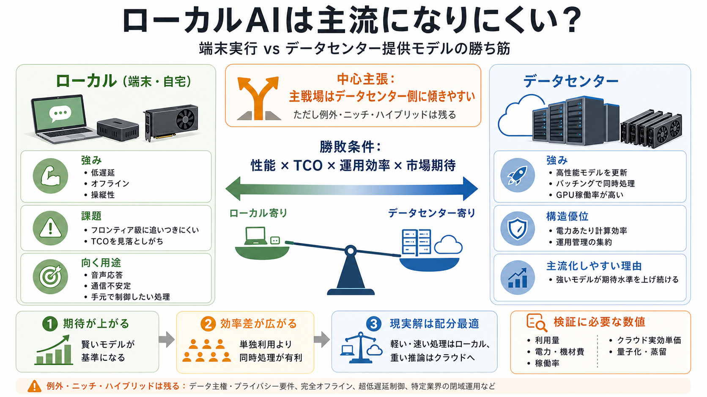

Why DeepSeek is cheap at scale but expensive to run locally
### sean goedecke June 1, 2025 │ ai, explainers, deepseek, inference # Why DeepSeek is cheap at scale but expensive to…

ローカル主流は来ない
「自宅や端末で動かすopen-weightモデル」と「データセンターの提供モデル」では、主戦場は後者になりやすい—という見立てです（ただし例外とニッチは残る）。
争点の整理
ここでの「open-weight」は、重み（パラメータ）を入手して自環境で推論できるモデルです。勝敗は「性能」「コスト（TCO）」「運用効率」「市場の期待値」で決まりやすいと論じられます。
期待が固定される
ローカルが小さくても賢くなっても、利用者の期待（エージェント的に解ける範囲）は上がり続けます。結果として「相対的に弱いローカル」が不満や失敗として表面化しやすい、というロジックです。
i. 絶対性能
モデルの“強さ”はサイズ/性能に依存しやすい。
ii. 期待形成
強いモデルが基準になり、要求水準が連鎖的に上がる。
追いつきにくい壁
ローカルで動かせる程度のサイズは、今後もデータセンター級のフロンティアモデルに追いつきにくい—とされています。小型が改良されても「より自律的で高度なタスク」が求められ続ける前提です。
TCOが争点
ローカルは安いと言われがちですが、初期投資（ホームラボ機材）と電気代、さらにGPU稼働率の低さ（使っていない計算資源）を無視していないか、という批判です。単純に月額だけでは比較が歪みます。
i. 初期費用
機材購入（サーバ/GPU等）。
ii. 運用
手間・故障対応・管理。
iii. 稼働率
バッチしにくく無駄が出やすい。
バッチが勝つ
データセンターは多数ユーザーの同時要求（バッチング）に強く、GPU稼働率を高めやすいのが優位点です。LLM推論は逐次生成のため単一ユーザーでは並列化しにくい一方、束ねると効率が跳ね上がります。
i. 単一ユーザー
前トークン結果に依存し、並列化が難しい。
ii. 多数ユーザー
リクエストを束ねてGPUを“稼働させる”。
効率の差
データセンターはバッチ処理向けに最適化された大規模・高効率GPUを使えるため、同じ電力あたりの計算能力で優位になりやすいと論じます。これは“電気代だけ”の比較では説明しきれない差です。
主流化の条件
ローカルが勝つとしても、それは制度・技術・市場の“例外”に寄った状況に限られる見解です。例：データセンター利用を政府が禁止、巨大モデル進化の停滞で小型が相対的にフロンティア化、など。
制度
規制でデータセンター利用が制約される。
技術/市場
大型の伸びが止まり、小型が相対的に勝つ。
ゼロじゃない
著者はローカルを無価値だと言っていません。遅延が重要な音声会話では、小型の高速モデルを端末で回し、重い推論はデータセンターへ委任するニーズが残り得ると述べています。
i. 低遅延
音声の応答速度を確保。
ii. 委任
重い推論はクラウドへ。
iii. 配分
用途別に役割を分ける。
ローカル vs データセンター
主戦場での優位性はデータセンター側に傾きやすい一方、ローカルは“操縦性”やネット不安定への強さでニッチを取り得ます。
ローカル（端末）
通信不安定/オフライン/制御（operability）を重視。
データセンター
バッチング・GPU効率・性能の更新で主導権。
納得できる点
本稿の強みは、推論効率を左右する要因（バッチング、GPU効率、TCOの見落とし）を中心に論じている点です。特に「性能が上がるほど期待も上がり、より強いモデルが選ばれ続ける」構図は説明力があります。
市場心理
期待形成が“勝者の固定”を作りやすい。
運用設計
技術だけでなくバッチ運用が差になる。
検証するなら
主張の方向性は理解できる一方、数値比較（電力、機材価格、稼働率、クラウド実効価格）が薄い点に注意が必要です。今後は「ローカル＝単独」ではなく「用途別にどこまでをローカルへ寄せるか」が現実解になりやすい、という着地になります。
i. 利用量
推論回数・平均生成長。
ii. 単価
端末GPU/電力、クラウド料金。
iii. 最適化
量子化/蒸留/推論最適化の織り込み。
### sean goedecke June 1, 2025 │ ai, explainers, deepseek, inference # Why DeepSeek is cheap at scale but expensive to…